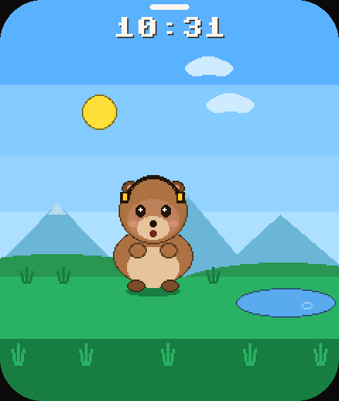
Nove amigos, todos criados pelo João, de 9 anos.
Os desenhos são do João. O código só traduziu cada traço, sem "corrigir" nada, e cada um ganhou 5 olhares, 6 bocas, versão doente e frases próprias. Os desenhos originais estão no fim da página.
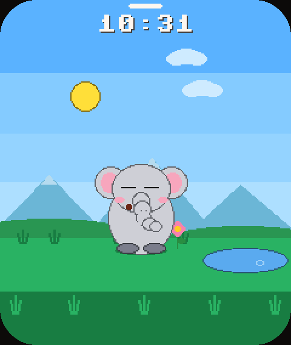
Elefante
nunca esqueco nada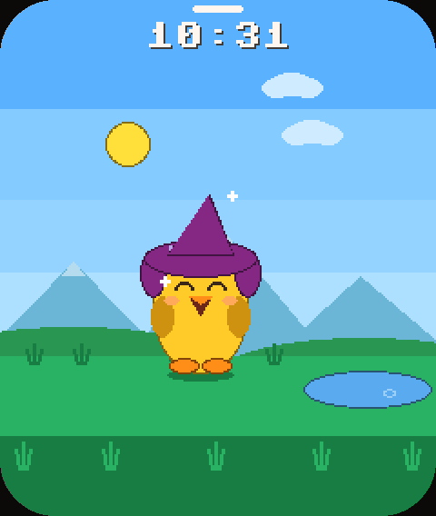
Pato
meu chapeu e magico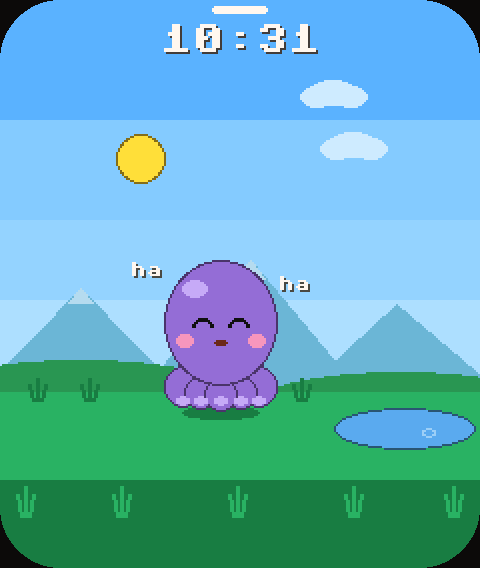
Polvo
tenho 8 abracos!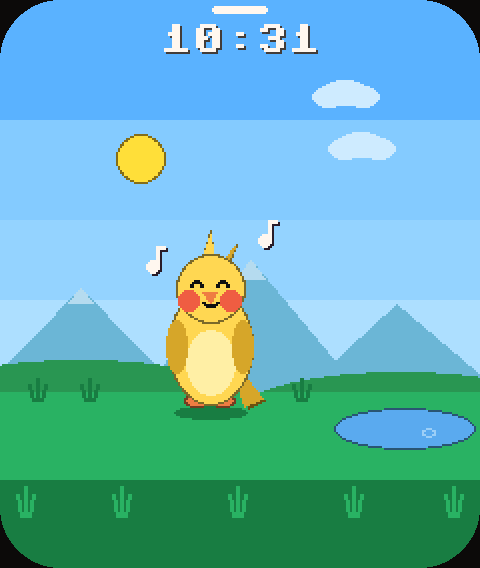
Calopsita
fiu fiu!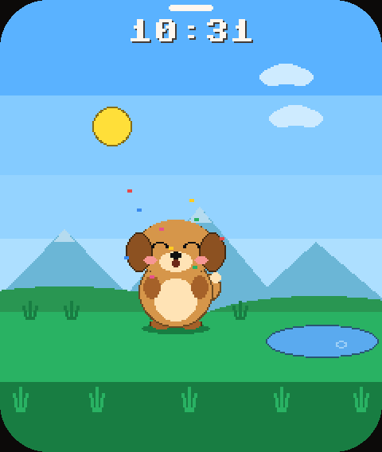
Caramelo
joga a bola!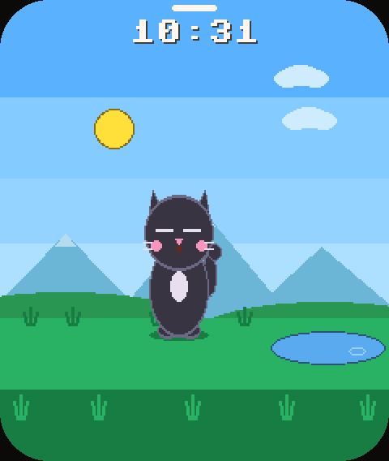
Gato
nao me perturbe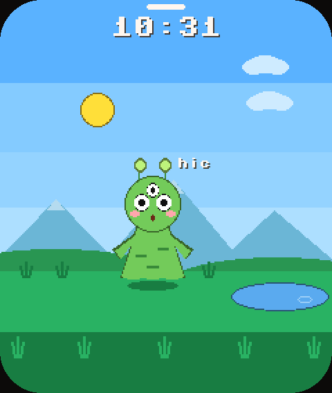
ET
leve-me ao seu lider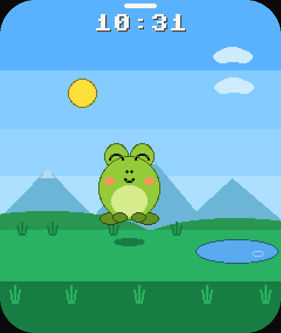
Sapinho
pula comigo!Um dia inteiro no bolso.
Seis fases de céu, com o sol nascendo às 6h e se pondo às 18h, lua, estrelas e nuvens. O dia segue o relógio de verdade ou passa em 10, 15 ou 30 minutos. Ele come às 7h, nada no lago depois do almoço, vê o pôr do sol e dorme das 22h às 6h.
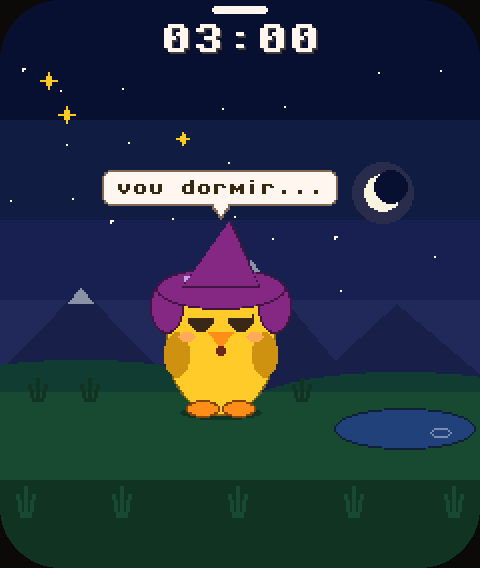
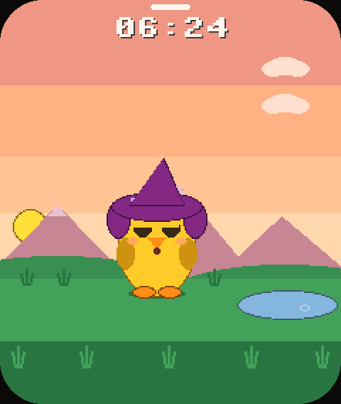
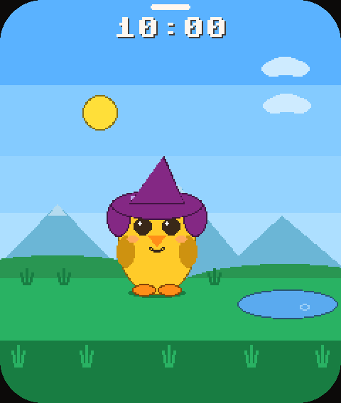
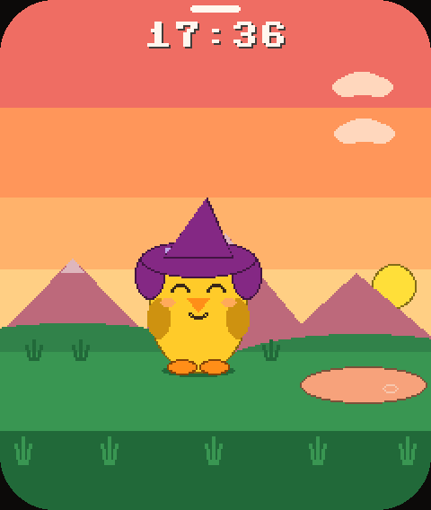
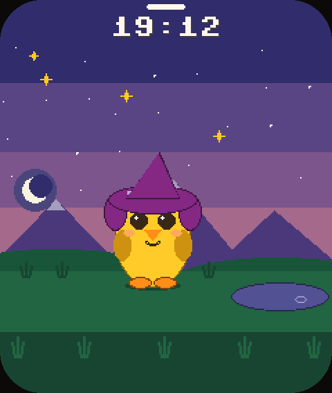
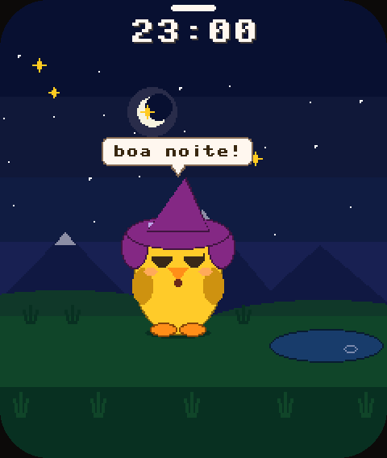
Ele não fica parado esperando.
Entre um movimento e outro ele respira, sorteia o que fazer conforme a hora e às vezes puxa conversa. E reage a você.
- Tocar neleRi, comemora e agradece o carinho. Cinco toques seguidos: "chega de cosquinha!"
- Segurar e arrastarColo. Ele estica, arregala os olhos e pede para descer.
- Sacudir a placaGrita, chacoalha e fica tonto, com estrelinhas girando.
- Fazer barulhoLeva susto e olha em volta. Dormindo, acorda por um minuto.
- Esquecer deleDepois de 10 minutos sem atenção, chora e chama. Um toque vira festa.
andarolhar em voltaespreguiçarbocejardançargirarcomemorartropeçartremer de friocochilarespirrarsoluçorirchorarlevar sustoficar tontochegar perto do vidroescondercavarcheirar florcambalhota
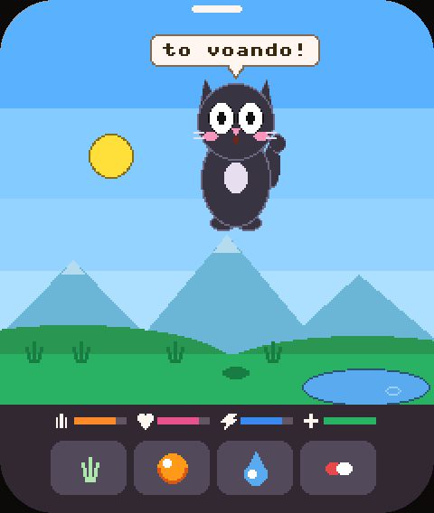
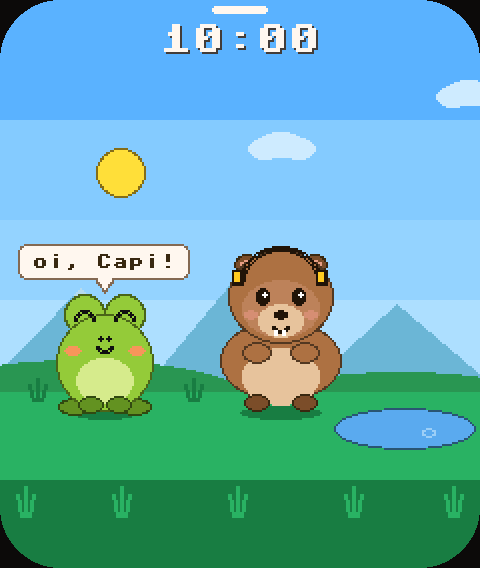
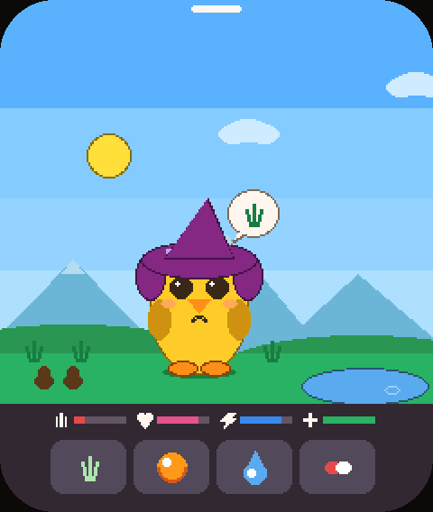
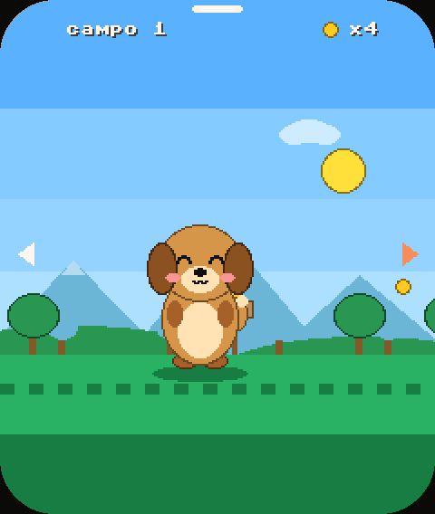
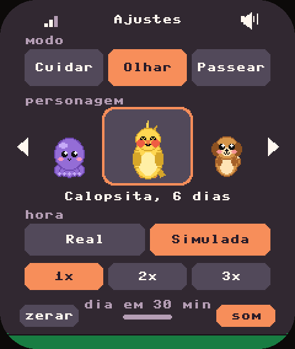
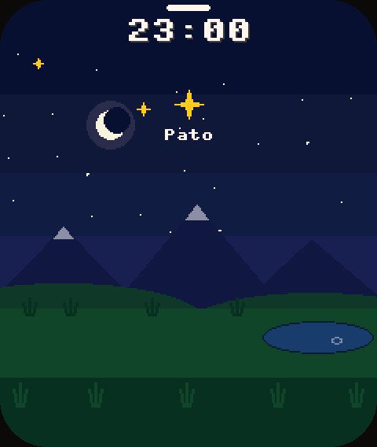
Do ovo à estrela.
Cada bichinho tem uma vida só dele, sorteada quando o ovo aparece.
 Ovo10 minutos. Tocar aquece.
Ovo10 minutos. Tocar aquece. Filhote3 dias, pequenininho
Filhote3 dias, pequenininho Adulto15 a 32 dias
Adulto15 a 32 dias Idoso5 dias, de bengala
Idoso5 dias, de bengala EstrelaNuma noite, com o nome no céu
EstrelaNuma noite, com o nome no céu
Acima, a mesma Capi a vida inteira. Ao todo são de 23 a 40 dias. Na hora Simulada, o ciclo inteiro cabe numa tarde. De manhã aparece um ovo novo, e as estrelas dos que já foram continuam brilhando à noite.
Monte o seu.
Não precisa soldar nada. Tudo cabe numa placa de bolso com tela, sensores e alto-falante.
- Waveshare ESP32-S3-Touch-LCD-1.83: tela touch de 240 × 284, acelerômetro, microfone, alto-falante, relógio e chip de bateria
- Bateria de lítio (opcional): o relógio não perde a hora, e a tela avisa quando chega a 10%
- Cabo USB-C e um computador com Python 3
Instale as ferramentas
pip install esptool mpremote
Coloque a placa em modo de gravação
Segure BOOT, aperte e solte RST, solte BOOT.
Grave
bash deploy.sh
O script baixa o MicroPython, grava, copia o jogo e acerta o relógio com a hora do computador. Sem internet na placa.
Código aberto, do jeito certo.
Licença MIT. Sons de terceiros com licença conferida. Uma prévia que roda o firmware de verdade no computador e serve de teste.
Ver sem a placa
A pasta previa/ roda o firmware no MicroPython do computador, com o hardware simulado, e gera as telas em PNG. Todas as imagens desta página saíram de lá.
Mande um personagem
Personagens desenhados por crianças são o coração do projeto. O guia de contribuição mostra como transformar um desenho em código.
Créditos
Sons da Kenney (CC0) e do Pixabay (baixados por você, nunca redistribuídos). MicroPython (MIT). Fontes Fredoka, Nunito e Press Start 2P (OFL).
Feito pelo João, de 9 anos.
Os personagens, os movimentos e as ações do Capigoshi nasceram da cabeça dele. Aqui estão os desenhos originais ao lado do que viraram na tela da placa. O código só traduziu cada traço, sem corrigir nada.
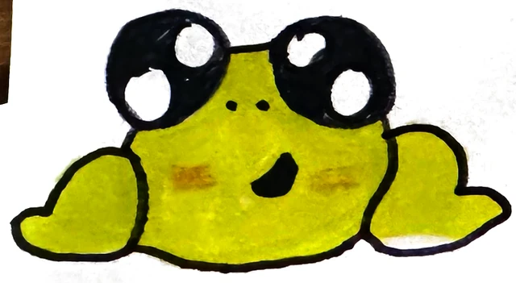
Sapinho
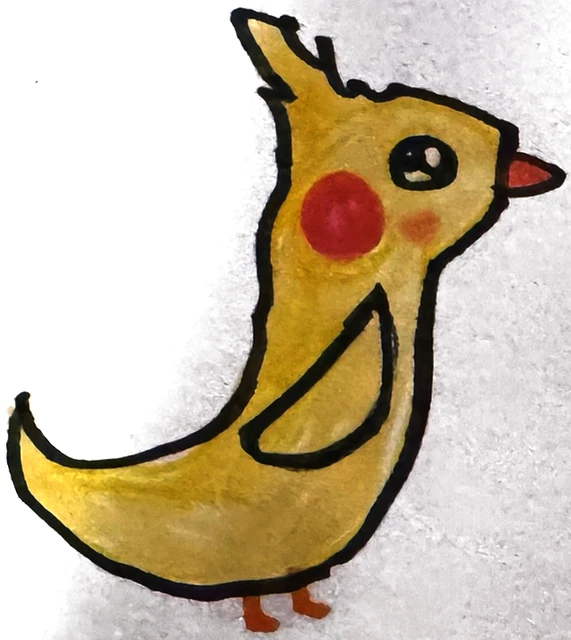
Calopsita
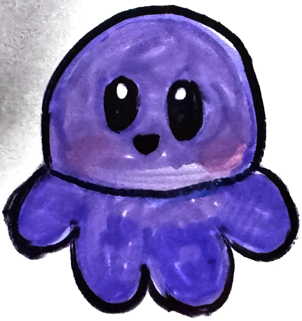
Polvo
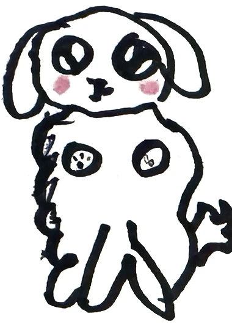
Caramelo
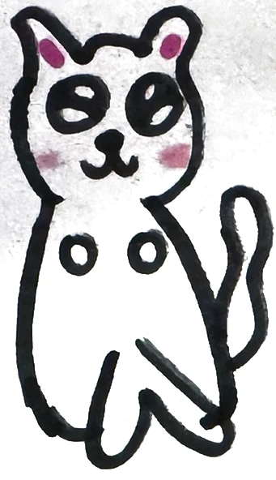
Gato
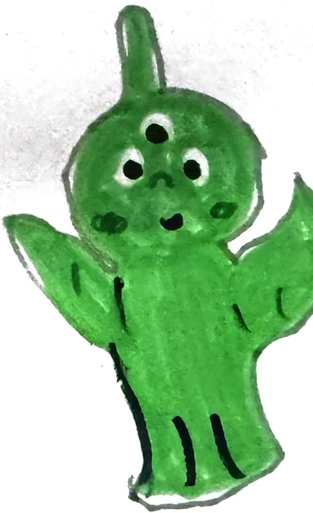
ET
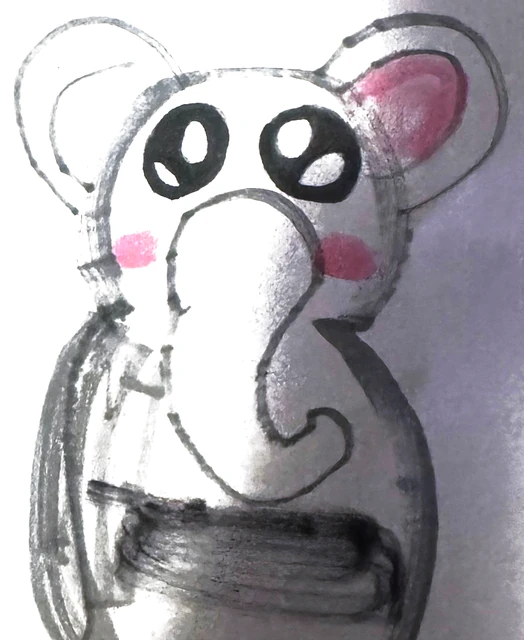
Elefante
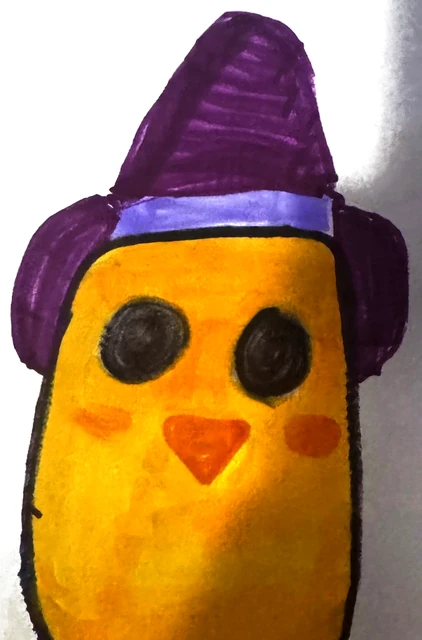
Pato
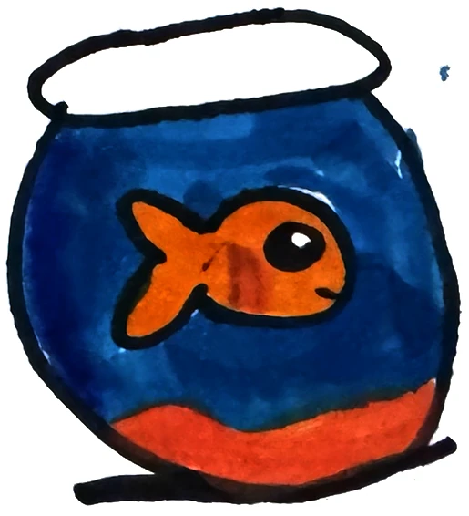
ainda não virou bichinho